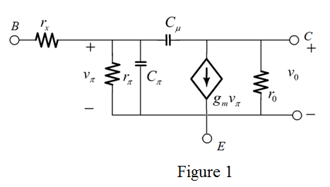
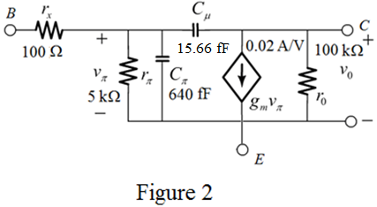

Determine the value of transcondutance.

Substitute 0.5 mA for  and 25 mV for
and 25 mV for .
.
Therefore, the value of transcondutance is.
Draw the complete hybrid model as shown in Figure 1.

Determine the value of transcondutance.
Substitute 0.5 mA for and 25 mV for.
Therefore, the value of transcondutance is.
Determine the value of resistance.
Substitute 100 for and 0.02 A/V for .
.
Therefore, the value of resistance  is .
is .
Determine the value of capacitance.
Substitute 30 ps for and 0.02 A/V for .
.
Therefore, the value of capacitance is .
Determine the value of capacitance.
Substitute 20 fF for .
Therefore, the value of capacitance is .
Determine the value of capacitance.
Substitute 600 fF for  and 40 fF for.
and 40 fF for.
Therefore, the value of capacitance  is .
is .
Determine the value of capacitance.
Substitute 30 fF for, 2 V for, 0.75 V for and 0.5 for m.
Therefore, the value of capacitance  is .
is .
Substitute 50 V for  and 0.5 mA for
and 0.5 mA for .
.
Therefore, the value of resistance  is .
is .
Draw the hybrid- model as shown in Figure 2.
model as shown in Figure 2.

Determine the value of unity gain frequency.

Substitute 640 fF for , 0.02 A/V for  and 15.66 fF for
and 15.66 fF for  .
.
Therefore, the value of unity gain frequency is.